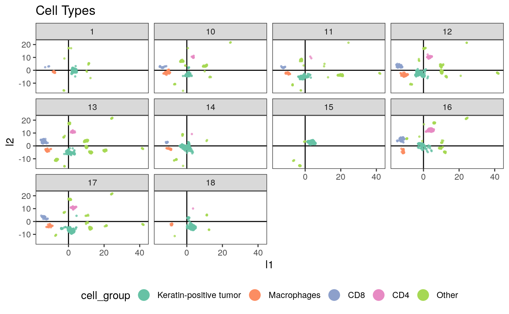
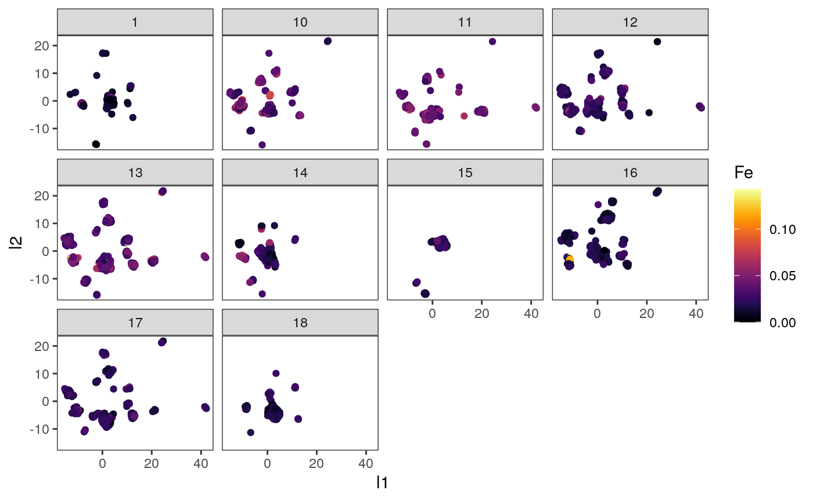
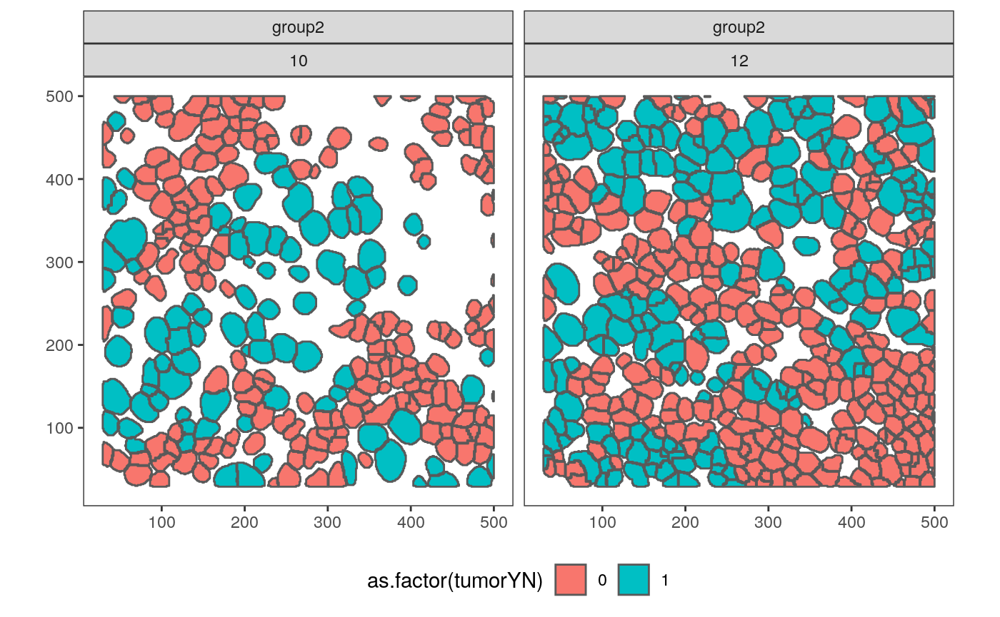

- In
composition.rmdwe ask whether it’s possible to recover sample-level spatial features from protein expression measurements - We ask a more challenging question here, looking for whether it’s possible to identify spatial features associated with individual cells, just from the expression measurements
- Understandably more far fetched, but there are some reasons it could happen – maybe when an immune cell is surrounded by cancer cells, it has a different protein expression pattern than when it is surrounded by other immune cells
- Again, motivation is that spatial characteristics of cells are interesting, but it’s easier to use technologies that only interrogate expression information
One theme between this vignette and composition.Rmd is that the notion of a sampling unit is not so straightforwards in this analysis – we can reasonably analyze the data at several levels of resolution. This vignette considers the cell-resolution analog of the sample-level questions in that vignette.
Without further delay, these are the packages we use in this analysis.
library("SummarizedExperiment")
## Loading required package: GenomicRanges## Loading required package: stats4## Loading required package: BiocGenerics## Loading required package: parallel##
## Attaching package: 'BiocGenerics'## The following objects are masked from 'package:parallel':
##
## clusterApply, clusterApplyLB, clusterCall, clusterEvalQ,
## clusterExport, clusterMap, parApply, parCapply, parLapply,
## parLapplyLB, parRapply, parSapply, parSapplyLB## The following objects are masked from 'package:stats':
##
## IQR, mad, sd, var, xtabs## The following objects are masked from 'package:base':
##
## anyDuplicated, append, as.data.frame, basename, cbind, colnames,
## dirname, do.call, duplicated, eval, evalq, Filter, Find, get, grep,
## grepl, intersect, is.unsorted, lapply, Map, mapply, match, mget,
## order, paste, pmax, pmax.int, pmin, pmin.int, Position, rank,
## rbind, Reduce, rownames, sapply, setdiff, sort, table, tapply,
## union, unique, unsplit, which.max, which.min## Loading required package: S4Vectors##
## Attaching package: 'S4Vectors'## The following object is masked from 'package:base':
##
## expand.grid## Loading required package: IRanges## Loading required package: GenomeInfoDb## Loading required package: Biobase## Welcome to Bioconductor
##
## Vignettes contain introductory material; view with
## 'browseVignettes()'. To cite Bioconductor, see
## 'citation("Biobase")', and for packages 'citation("pkgname")'.## Loading required package: DelayedArray## Loading required package: Matrix##
## Attaching package: 'Matrix'## The following object is masked from 'package:S4Vectors':
##
## expand## Loading required package: matrixStats##
## Attaching package: 'matrixStats'## The following objects are masked from 'package:Biobase':
##
## anyMissing, rowMedians##
## Attaching package: 'DelayedArray'## The following objects are masked from 'package:matrixStats':
##
## colMaxs, colMins, colRanges, rowMaxs, rowMins, rowRanges## The following objects are masked from 'package:base':
##
## aperm, apply, rowsumlibrary("dplyr")
##
## Attaching package: 'dplyr'## The following object is masked from 'package:matrixStats':
##
## count## The following object is masked from 'package:Biobase':
##
## combine## The following objects are masked from 'package:GenomicRanges':
##
## intersect, setdiff, union## The following object is masked from 'package:GenomeInfoDb':
##
## intersect## The following objects are masked from 'package:IRanges':
##
## collapse, desc, intersect, setdiff, slice, union## The following objects are masked from 'package:S4Vectors':
##
## first, intersect, rename, setdiff, setequal, union## The following objects are masked from 'package:BiocGenerics':
##
## combine, intersect, setdiff, union## The following objects are masked from 'package:stats':
##
## filter, lag## The following objects are masked from 'package:base':
##
## intersect, setdiff, setequal, union##
## Attaching package: 'keras'## The following object is masked from 'package:BiocGenerics':
##
## normalizelibrary("raster")
## Loading required package: sp##
## Attaching package: 'sp'## The following object is masked from 'package:IRanges':
##
## %over%##
## Attaching package: 'raster'## The following object is masked from 'package:dplyr':
##
## select## The following objects are masked from 'package:SummarizedExperiment':
##
## distance, metadata<-, shift, trim, values, values<-## The following objects are masked from 'package:GenomicRanges':
##
## distance, shift, trim, values, values<-## The following objects are masked from 'package:IRanges':
##
## distance, shift, trim, values, values<-## The following objects are masked from 'package:S4Vectors':
##
## metadata, metadata<-, values, values<-## Loading required package: abind## Loading required package: sf## Linking to GEOS 3.6.2, GDAL 2.2.3, PROJ 4.9.3##
## Attaching package: 'tidyr'## The following object is masked from 'package:reshape2':
##
## smiths## The following object is masked from 'package:raster':
##
## extract## The following objects are masked from 'package:Matrix':
##
## expand, pack, unpack## The following object is masked from 'package:S4Vectors':
##
## expand## Loading required package: viridisLitelibrary("BIRSBIO2020.scProteomics.embeddings") theme_set(theme_bw() + theme(panel.grid=element_blank()))
We download the data if it’s not already present. We’re filtering to just 10 samples in this run, since it lets the vignette run faster. But to train the complete model, replace the params$max_sample with 41 (the number of raster files we have).
data_dir <- file.path(Sys.getenv("HOME"), "Data") get(load(file.path(data_dir, "mibiSCE.rda")))
## class: SingleCellExperiment
## dim: 49 201656
## metadata(0):
## assays(1): mibi_exprs
## rownames(49): C Na ... Ta Au
## rowData names(4): channel_name is_protein hgnc_symbol wagner_overlap
## colnames: NULL
## colData names(36): SampleID cellLabelInImage ...
## Survival_days_capped_2016.1.1 Censored
## reducedDimNames(0):
## altExpNames(0):download_data(data_dir)
## Warning in dir.create(directory, recursive = TRUE): '/github/home/Data' already
## exists## [[1]]
## [1] "/github/home/Data/mibiSCE.rda"
##
## [[2]]
## [1] "/github/home/Data/masstagSCE.rda"
##
## [[3]]
## [1] "/github/home/Data/TNBC_shareCellData"loaded_ <- load_mibi(data_dir, params$max_samples)
We’ll loop over all the tiffs and extract the 100 \(\times\) 100 top-left quadrant from each image, also to speed up computation in these experiments.
subsample <- spatial_subsample(loaded_$tiffs, loaded_$mibi)
## [1] "cropping 1/10"
## [1] "cropping 2/10"
## [1] "cropping 3/10"
## [1] "cropping 4/10"
## [1] "cropping 5/10"
## [1] "cropping 6/10"
## [1] "cropping 7/10"
## [1] "cropping 8/10"
## [1] "cropping 9/10"
## [1] "cropping 10/10"ims <- subsample$ims mibi_sce <- subsample$exper
Now, let’s extract some features on which to perform the joint embedding. We’ll transform and reweight the columns, to make the two sets of features more comparable. First, for transformation, we’ll convert antigen expression values to ranks and then threshold.
x <- t(assay(mibi_sce)) x_order <- hclust(dist(t(x)))$order pairs(x[, x_order[1:6]], col = rgb(0, 0, 0, 0.5), cex=0.1)

Next, we’ll extract some features from the spatial data. Note that some cells seem to appear in the raster but not in the colData. This seems weird, and is worth looking into, but for now I’m going to just innerJoin to ignore that.
# polygonize each raster col_df <- as.data.frame(colData(mibi_sce)) %>% mutate( cell_type = cell_type(mibi_sce), cell_group = fct_lump(cell_type, prop = 0.05), ) polys <- list() for (i in seq_along(ims)) { cur_sample <- names(ims)[i] cur_cols <- col_df %>% filter(SampleID %in% cur_sample) polys[[i]] <- polygonize(ims[[i]]) %>% mutate(SampleID = as.numeric(cur_sample)) %>% unite(sample_by_cell, SampleID, cellLabelInImage, remove=FALSE) %>% inner_join(cur_cols, by = c("SampleID", "cellLabelInImage")) } polys <- polys[sapply(polys, nrow) > 0] col_df <- col_df %>% unite(sample_by_cell, SampleID, cellLabelInImage, remove=FALSE) # a little plot polys_df <- do.call(rbind, polys) ggplot(polys_df %>% filter(!is.na(cellSize))) + geom_sf(aes(fill = as.factor(tumorYN))) + facet_wrap(Survival_days_capped_2016.1.1~SampleID) + theme(legend.position = "bottom")
# some features that don't need graph construction cell_stats <- polys_df %>% dplyr::select(sample_by_cell, cell_type, cellSize) %>% mutate( log_size = log(cellSize), value = 1 ) %>% spread(cell_type, value, 0) %>% as.data.frame() %>% dplyr::select(-cellSize, -geometry) # extract basic graph features graph_stats <- list() for (i in seq_along(polys)) { print(paste0("processing sample ", i, "/", length(polys))) cell_ids <- unique(polys[[i]]$cellLabelInImage) G <- extract_graph(polys[[i]]) graph_stats[[i]] <- loop_stats(cell_ids, "graph", G, polys[[i]], type_props) %>% mutate(cellType = paste0("graph_neighbors_", cellType)) %>% spread(cellType, props, 0) %>% mutate(SampleID = first(polys[[i]]$SampleID)) }
## [1] "processing sample 1/10"## Warning in st_centroid.sf(geometries): st_centroid assumes attributes are
## constant over geometries of x## [1] "processing sample 2/10"## Warning in st_centroid.sf(geometries): st_centroid assumes attributes are
## constant over geometries of x## [1] "processing sample 3/10"## Warning in st_centroid.sf(geometries): st_centroid assumes attributes are
## constant over geometries of x## [1] "processing sample 4/10"## Warning in st_centroid.sf(geometries): st_centroid assumes attributes are
## constant over geometries of x## [1] "processing sample 5/10"## Warning in st_centroid.sf(geometries): st_centroid assumes attributes are
## constant over geometries of x## [1] "processing sample 6/10"## Warning in st_centroid.sf(geometries): st_centroid assumes attributes are
## constant over geometries of x## [1] "processing sample 7/10"## Warning in st_centroid.sf(geometries): st_centroid assumes attributes are
## constant over geometries of x## [1] "processing sample 8/10"## Warning in st_centroid.sf(geometries): st_centroid assumes attributes are
## constant over geometries of x## [1] "processing sample 9/10"## Warning in st_centroid.sf(geometries): st_centroid assumes attributes are
## constant over geometries of x## [1] "processing sample 10/10"## Warning in st_centroid.sf(geometries): st_centroid assumes attributes are
## constant over geometries of xgraph_stats <- bind_rows(graph_stats) %>% mutate_all(replace_na, 0) %>% unite(sample_by_cell, SampleID, cellLabelInImage) %>% left_join(as.data.frame(cell_stats))
## Joining, by = "sample_by_cell"# example plot: what are the neighborhoods of tumors? plot(graph_stats$`Keratin-positive tumor`, graph_stats$`graph_neighbors_Keratin-positive tumor`)
Now, we’ll standardize these features and learn some embeddings.
# standardize features between the two tables x <- t(assay(mibi_sce)) %>% as_tibble() x <- x %>% mutate_all( function(u) (u - min(u)) / diff(range(u))) %>% mutate_all(function(u) u / sqrt(ncol(x))) %>% dplyr::select_if(function(u) !all(is.na(u))) %>% mutate(sample_by_cell = col_df$sample_by_cell) y <- graph_stats %>% mutate_at(vars(-sample_by_cell), function(u) (u - min(u)) / diff(range(u))) %>% mutate_at(vars(-sample_by_cell), function(u) u / sqrt(ncol(graph_stats) - 1)) %>% select_if(function(u) !all(is.na(u))) z <- x %>% inner_join(y, by = "sample_by_cell") z_mat <- z %>% dplyr::select(-sample_by_cell) %>% as.matrix() heatmap(z_mat)
# learning embeddings across the two tables conf <- umap.defaults conf$min_dist <- 0.8 embeddings <- umap(z_mat, conf) embeddings_df <- embeddings$layout %>% as_tibble(.name_repair = "universal") %>% rename("l1" = `...1`, "l2" = `...2`) %>% mutate(sample_by_cell = z$sample_by_cell) %>% left_join(col_df) %>% left_join(z)
## New names:
## * `` -> ...1
## * `` -> ...2## Joining, by = "sample_by_cell"
## Joining, by = "sample_by_cell"We’ll plot the embeddings we just made, against some of the derived features.
ggplot(embeddings_df) + geom_hline(yintercept = 0) + geom_vline(xintercept = 0) + geom_point( aes(x = l1, y = l2, col = cell_group), size = 0.5, alpha = 0.7 ) + facet_wrap(~SampleID) + scale_color_brewer(palette = "Set2") + guides(col = guide_legend(override.aes = list(alpha = 1, size = 5))) + ggtitle("Cell Types") + theme(legend.position = "bottom")
ggplot(embeddings_df) + geom_point(aes(x = l1, y = l2, col = Fe)) + facet_wrap(~ SampleID) + scale_color_viridis(option = "inferno")
ggplot(embeddings_df) + geom_hline(yintercept = 0) + geom_vline(xintercept = 0) + geom_point( aes(x = l1, y = l2, col = sqrt(graph_neighbors_Macrophages)), size = 0.5, alpha = 0.7 ) + scale_color_viridis(option = "inferno") + facet_wrap(~ SampleID) + theme(legend.position = "bottom") + ggtitle("Prop. Neighbors are Macrophages")
Cells \(\to\) Samples
Now that we have embeddings at the cell level, we can try to summarize samples by how many of their cells lie in different regions of the embedding space. First, we’ll cluster using an arbitrary \(K\).
clusters <- kmeans(embeddings$layout, centers = params$cluster_K) # plot the clusters ggplot(embeddings_df) + geom_point( aes(x = l1, y = l2, col = cell_group), size = 0.5, alpha = 0.1 ) + geom_text( data = data.frame(clusters$centers, cluster = seq_len(nrow(clusters$centers))), aes(x = X1, y = X2, label = cluster), size = 5 ) + geom_hline(yintercept = 0) + geom_vline(xintercept = 0) + guides(col = guide_legend(override.aes = list(alpha = 1, size = 5))) + facet_wrap(~SampleID) + ggtitle("Clusters vs. Cell Types") + theme(legend.position = "bottom")

# summarize the samples embeddings_df$cluster <- as_factor(clusters$cluster) cluster_props <- embeddings_df %>% group_by(SampleID, cluster) %>% summarise(count = n()) %>% group_by(SampleID) %>% mutate( total = sum(count), prop = count / total ) %>% left_join( col_df %>% dplyr::select(SampleID, GRADE) %>% unique() )
## `summarise()` regrouping output by 'SampleID' (override with `.groups` argument)## Joining, by = "SampleID"ggplot(cluster_props) + geom_bar( aes(x = as.factor(SampleID), y = prop, fill = cluster), position = "stack", stat = "identity" ) + scale_y_continuous(expand = c(0, 0)) + scale_x_discrete(expand = c(0, 0)) + facet_grid(.~GRADE, scales="free_x", space="free_x")

Question: Can you map the different clusters back to the spatial patterns that we had noticed from before? E.g., are those in cluster “5” more spatially heterogeneous?
To answer this, let’s compare samples 23, 27, 2 with 10 and 12. These samples seem to have pretty different cluster compositions, even though they both lie in the grade 3 group.
polys_q <- polys_df %>% filter(SampleID %in% c("23", "27", "2", "10", "12")) %>% mutate(compare = ifelse(SampleID %in% c("10", "12"), "group2", "group1")) ggplot(polys_q) + geom_sf(aes(fill = as.factor(tumorYN))) + facet_wrap(compare ~ SampleID) + theme(legend.position = "bottom")

I’m not sure I’d have put 10 and 12 that close to one another, since 10 has lots of empty space, but at least the first three do seem qualitatively similar.
In fact, we can compare many of the spatial images, based on the ordering we just defined.
cluster_props_wide <- cluster_props %>% dcast(SampleID ~ cluster, value.var = "prop", fill = 0) sample_order <- cluster_props_wide %>% dist() %>% hclust() sample_order <- sample_order$order polys_df <- polys_df %>% mutate(SampleID = factor(SampleID, levels = as.character(cluster_props_wide$SampleID[sample_order]))) ggplot(polys_df %>% filter(SampleID %in% levels(polys_df$SampleID)[1:12])) + geom_sf(aes(fill = as.factor(tumorYN))) + facet_wrap(GRADE ~ SampleID) + theme(legend.position = "bottom")

## Joining, by = c("SampleID", "GRADE")ggplot(tmp) + geom_dotplot( aes(fill = as.factor(GRADE), x = prop) ) + facet_wrap(~ cluster)
## `stat_bindot()` using `bins = 30`. Pick better value with `binwidth`.Guessing the Embedding
We’ll finally load the cytof data to identify shared features. Then, we’ll look at the relationship between those features and the above embeddings, to see if we could map the cytof data into the mibitof embedding space.
load(file.path(data_dir, "masstagSCE.rda")) masstag <- data_list("sce") common_antigens <- intersect(rownames(masstag$tcell.sce), rownames(mibi_sce))
I’ll learn a mapping at the cell level, using (1) cell identity and (2) levels of CD68, CD20, CD11b, CD4, CD16, CD163, CD3, CD11c, CD45 to identify the corresponding location in the embedding space. If this is accurate, we could then cluster the imputed cell embeddings, to come up with a new spatial summary of the mass spec data. Otherwise, we would report that the antigen information on its own is not enough to determine the spatial characteristics of the sample.
This prepares the training data, which maps antigen values and cell type indicators to embedding locations.
predictors <- x %>% left_join( y %>% dplyr::select(-starts_with("graph")) %>% rename_all(tolower), by = "sample_by_cell" ) response <- embeddings_df %>% dplyr::select(l1, l2) %>% as.matrix() pred_mat <- predictors %>% dplyr::select(all_of(common_antigens)) %>% as.matrix() model <- generate_model(ncol(pred_mat)) model %>% fit(pred_mat, response, epochs=200, batch_size=1024)
y_hat <- predict(model, pred_mat) plot(response, cex=0.1, col = rgb(0, 0, 0, 0.1)) points(y_hat, cex=0.1, col = rgb(1, 0, 0, 0.1))
What happens when we summarize these samples by these predicted cluster memberships? Ideally, you would be able to recognize the original cluster compositions, which should reflect spatial expression patterns (if they don’t already).
In the worst case, the imputed cluster compositions would be totally unrelated to the real (known, for the MIBI-ToF data) compositions.
We can compare this with what the predictions would have been if we had used all the antigens (but no explicit spatial information).
pred_mat <- predictors %>% dplyr::select(-sample_by_cell) %>% as.matrix() model <- generate_model(ncol(pred_mat)) model %>% fit(pred_mat, response, epochs=200, batch_size=1024)